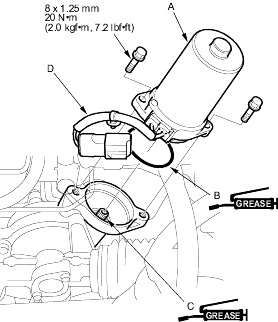
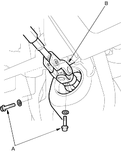

- Remove the motor (A) from the gearbox housing.
- Remove the O-ring and discard it.
- Clean the mating surface of the motor and gearbox.

- Apply a thin coat of silicone grease to the new O-ring (B), and carefully fit it on the motor.
- Apply steering gear grease around the worm shaft (C).
- Install the motor on the gearbox by engaging the motor shaft and worm shaft. Note the motor installation position (direction of motor wires (D)).
- Install the removed parts in the reverse order of removal, and note these item:
- Make sure the motor 2P connector and EPS wire harness 6P connector properly connected.
- Make sure the motor and EPS wires are not caught or pinched by any parts.
- After installation, start the engine, and let it idle. Turn the steering wheel from lock-to-lock several times. Check that the EPS indicator does not come on.
Ball joint remover, 28 mm, 07MAC-SL00200
Note these items during removal:
- RHD type is shown, LHD type is symmetrical.
- Be sure to remove the steering wheel before disconnecting the steering joint. Damage to the cable reel can occur.
- Remove the motor on the steering gearbox (see page 17-95).
- Raise the front of vehicle, and make sure it is securely supported.
- Remove the front wheels.
- Remove the driver's airbag and the steering wheel (see page 17-6).
- Remove the driver's dashboard lower covers.
- Remove the steering joint bolts (A), disconnect the steering joint by moving the steering joint (B) toward the column.
